Case 01 of 18 · The Crash-Test Family
Bolas pencil test
Can the motion be checked before anything is drawn?
A page that acts out the three experiments of From Imagetext to Worldtext with ball-and-cord figures, with the text beside the action, beat by beat.
How it was made
- Split the work into two rooms: a skeletal pencil-test room, where only joints move, and a studio room, where figures are drawn.
- Key every beat as a stick figure and log it on an X-sheet.
- Pass a pose to the studio room only after it clears the skeletal gate.
What this case teaches
- Timing and staging are cheap to change on a skeleton and expensive to change on finished drawings, so they are settled first.
- The gate is a rule, not a judgement call: a pose moves on only when it passes.
- Putting the source text beside each beat turns every frame into a check: does this beat say what the line says?
How it differs. This is the only case with no character yet. The figures are generic balls and cords, so the lesson is about method, not about a body.
First sheet and last sheet
Where the stage started and where it finished.

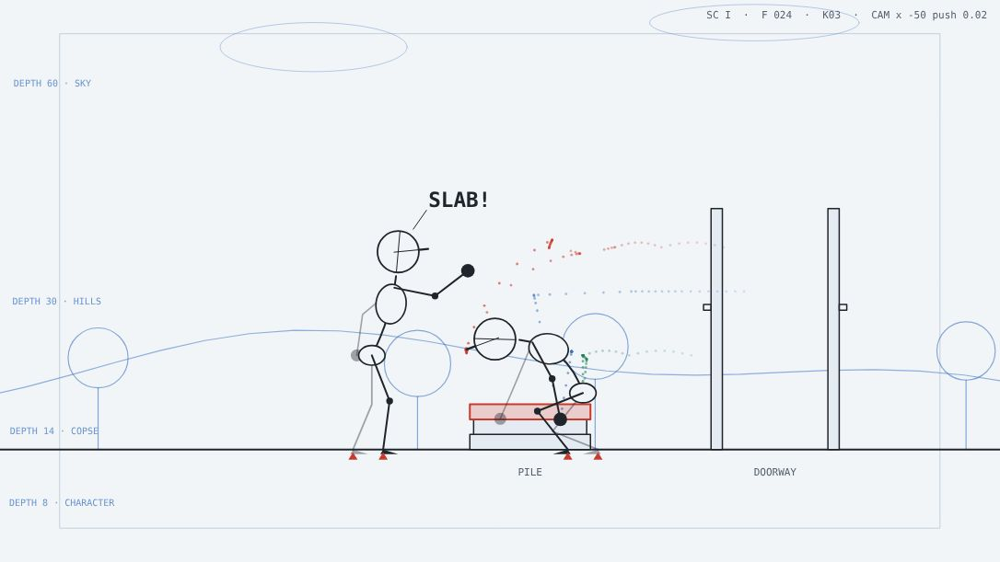

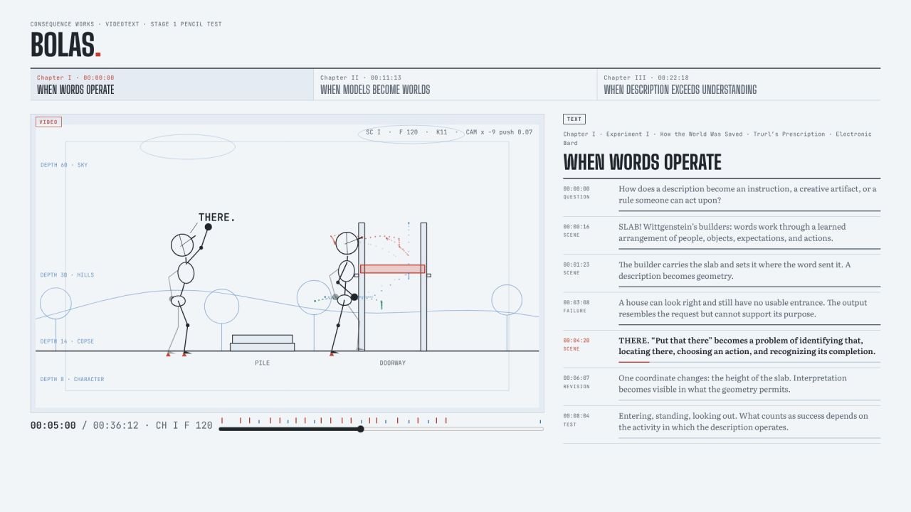
The sheets, step by step
Grouped by working session. Click any sheet to view it full size; use the arrow keys to move through them.

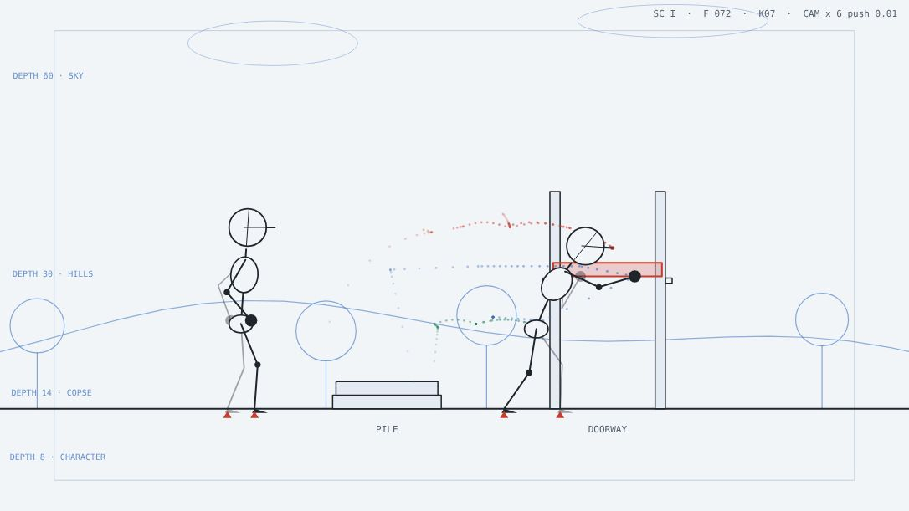

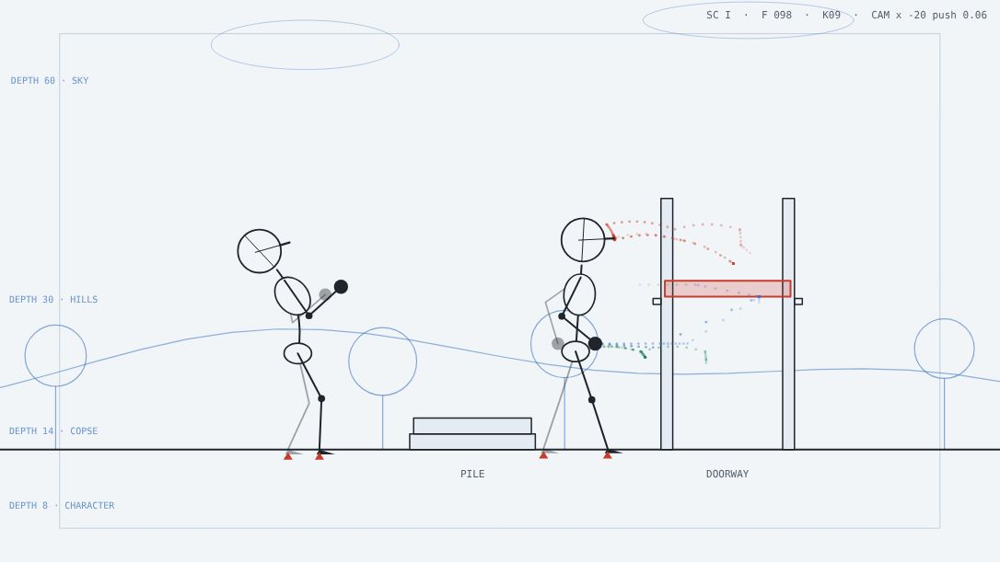

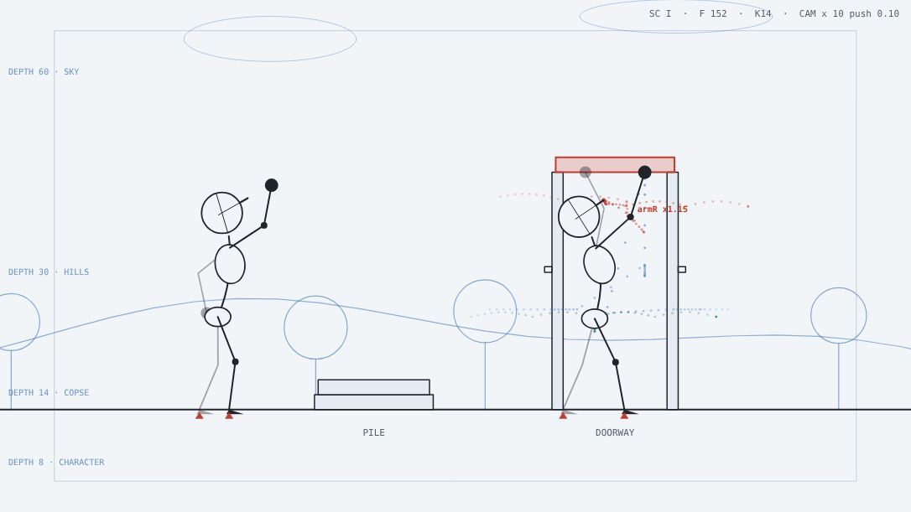
Show 10 more from this step

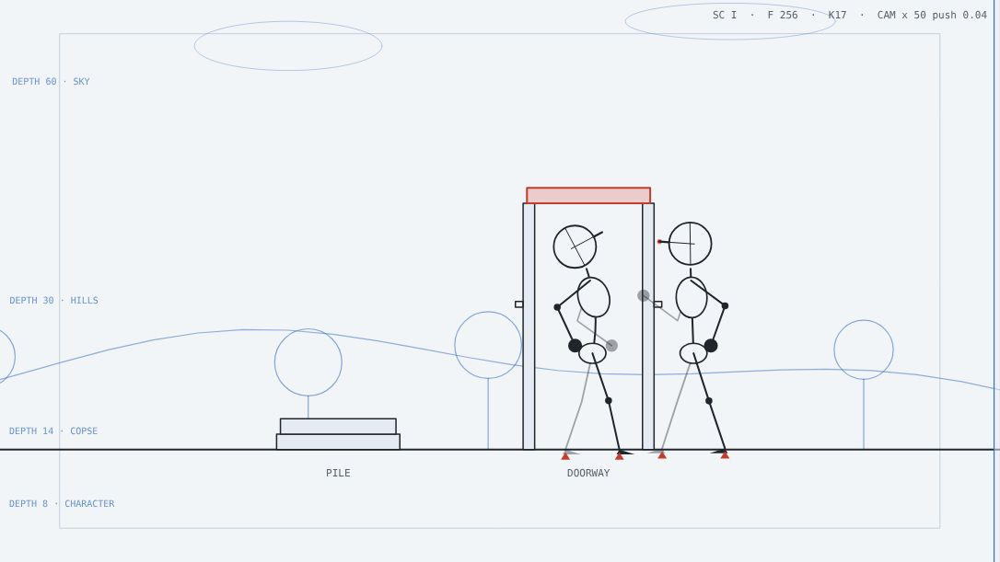

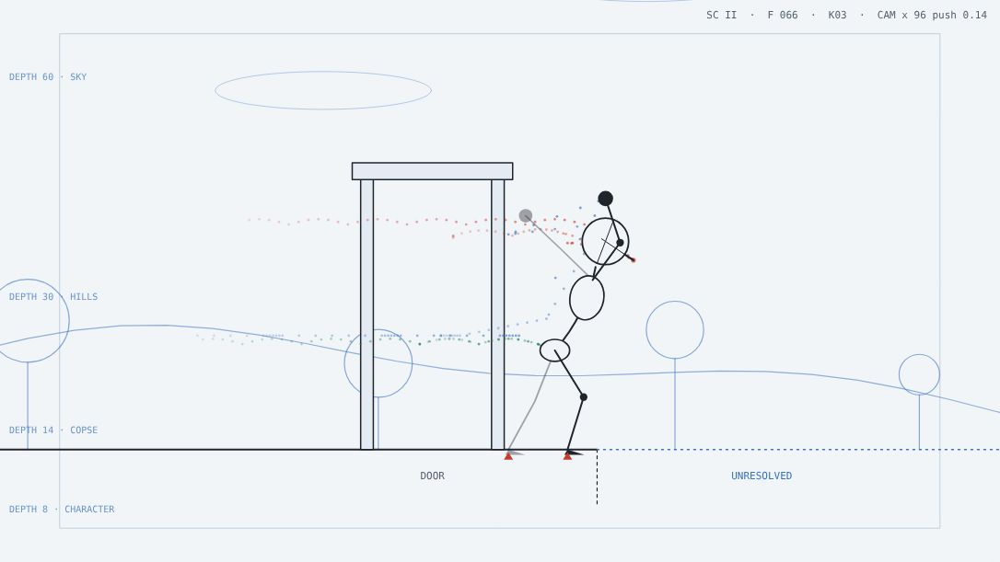

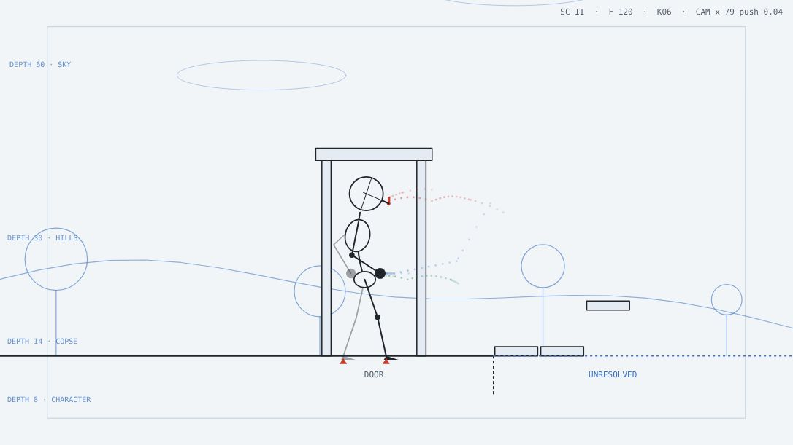

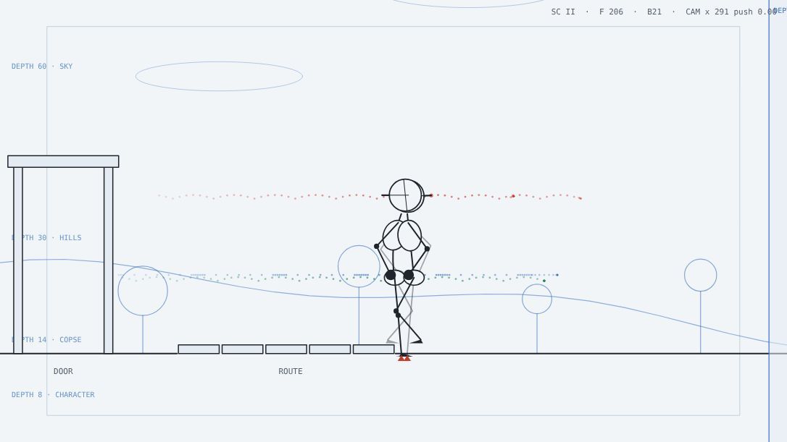

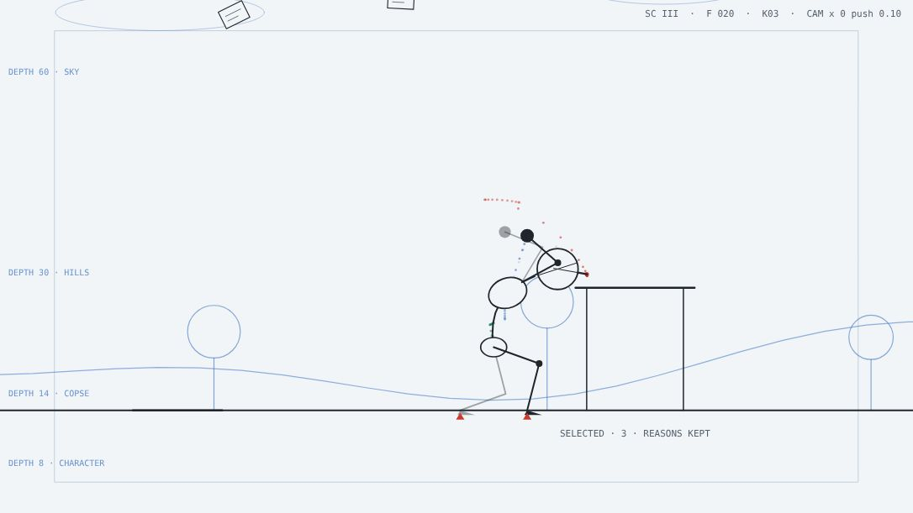

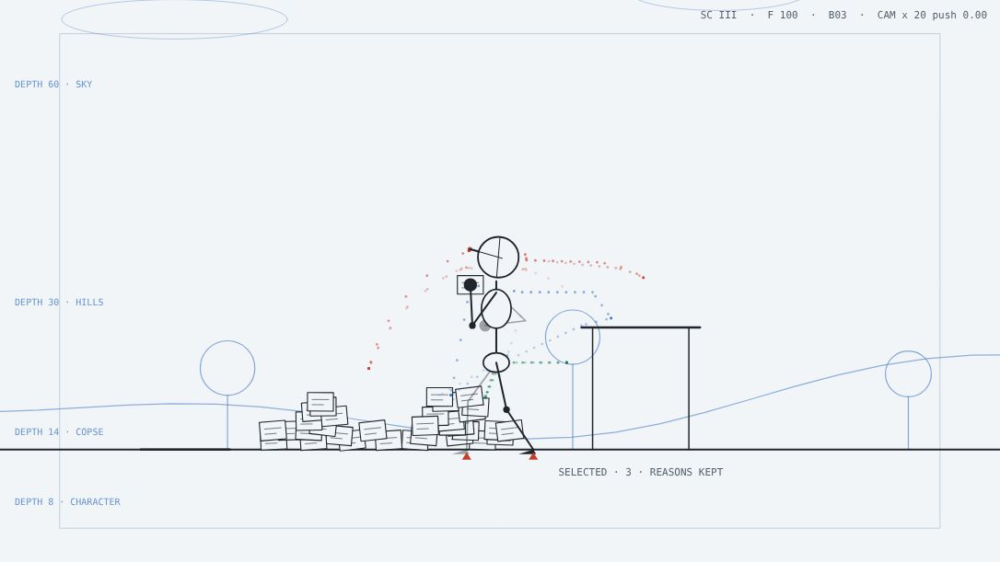

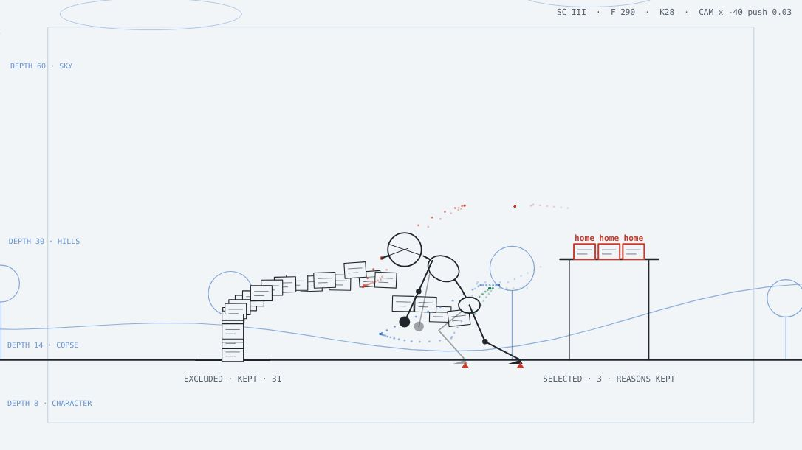

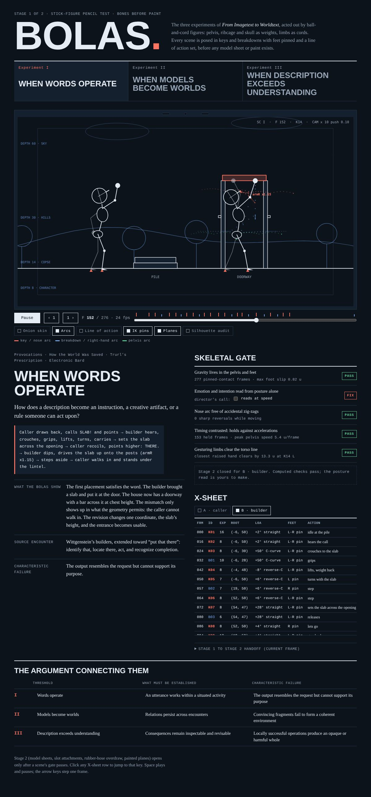

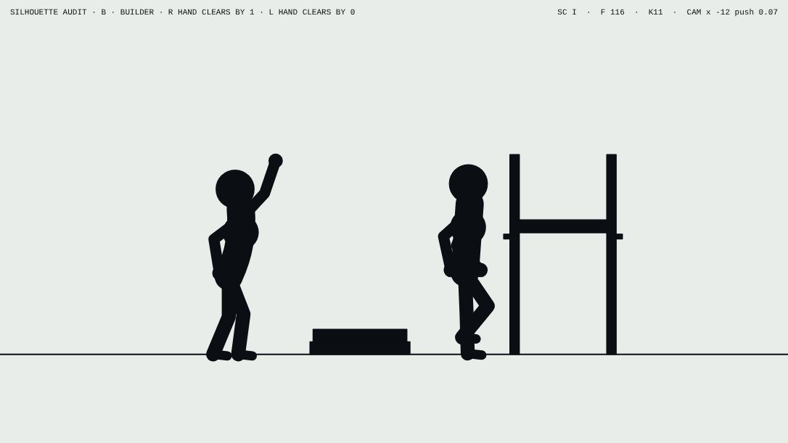

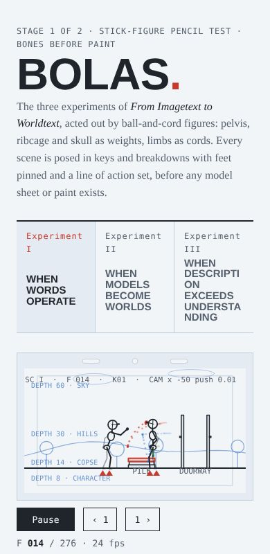

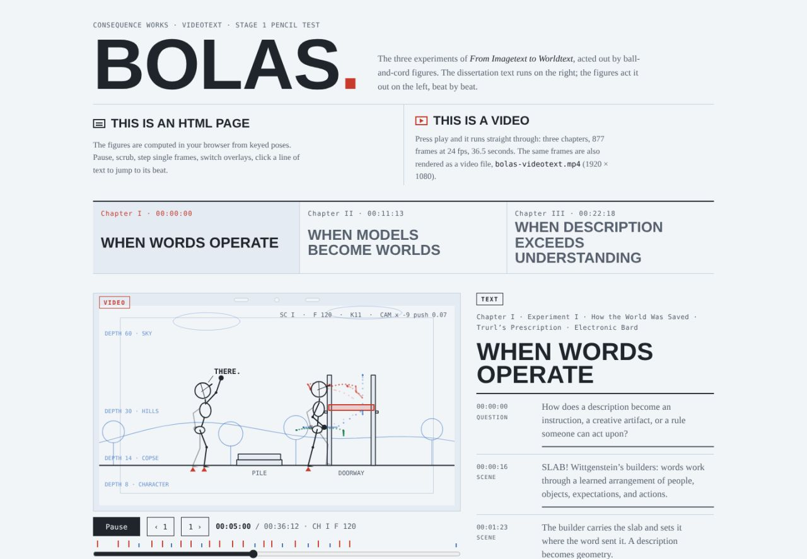

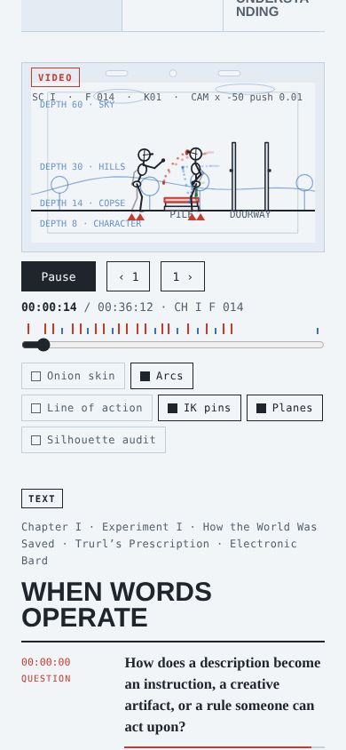
What came out of it
 Bolas Pencil TestThe three experiments of From Imagetext to Worldtext acted out by ball-and-cord figures, the text beside the action, beat by beat, with a skeletal gate and an X-sheet.
Bolas · videotextThree experiments from From Imagetext to Worldtext, acted by ball-and-cord figures: a call that builds a doorway, a door that needs somewhere to lead, and a pile of matches sorted into reasons.
Bolas Pencil TestThe three experiments of From Imagetext to Worldtext acted out by ball-and-cord figures, the text beside the action, beat by beat, with a skeletal gate and an X-sheet.
Bolas · videotextThree experiments from From Imagetext to Worldtext, acted by ball-and-cord figures: a call that builds a doorway, a door that needs somewhere to lead, and a pile of matches sorted into reasons.Read the record
Carried forward
The skeleton becomes the one body that every later case uses.